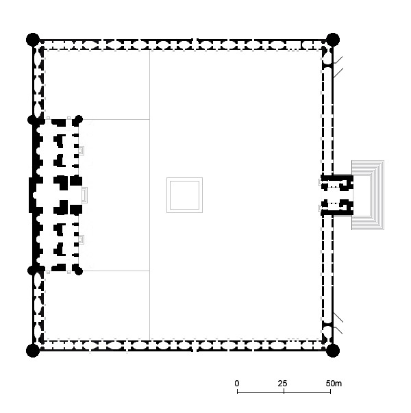
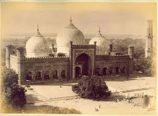
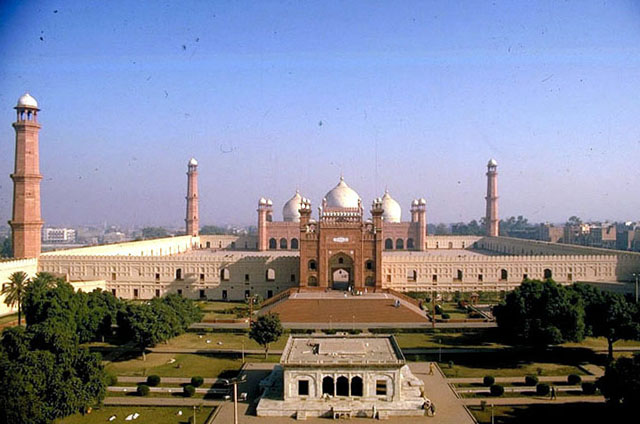
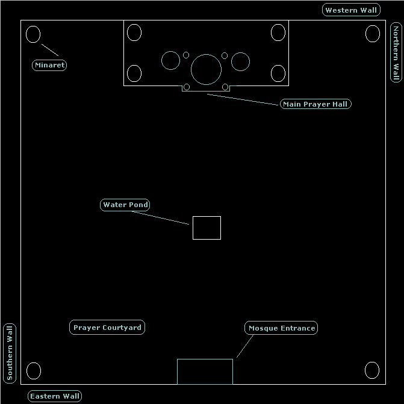
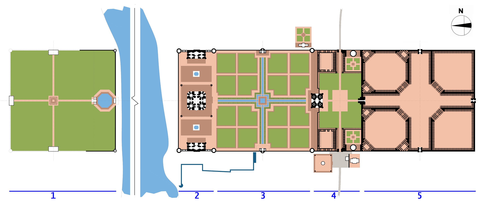
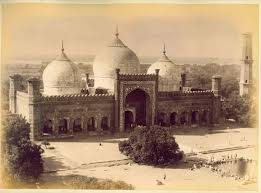
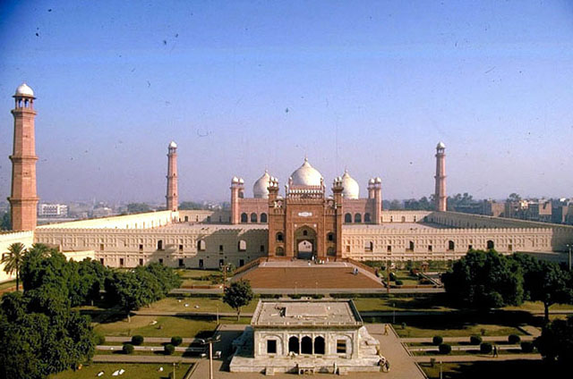
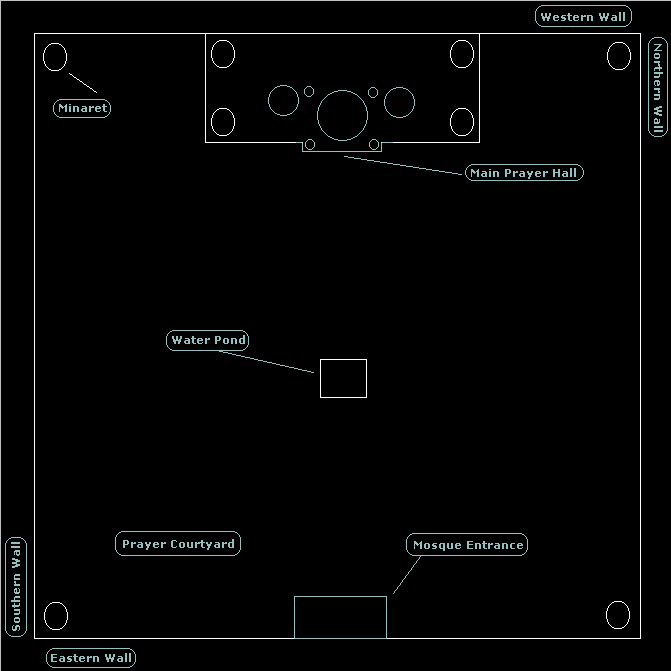
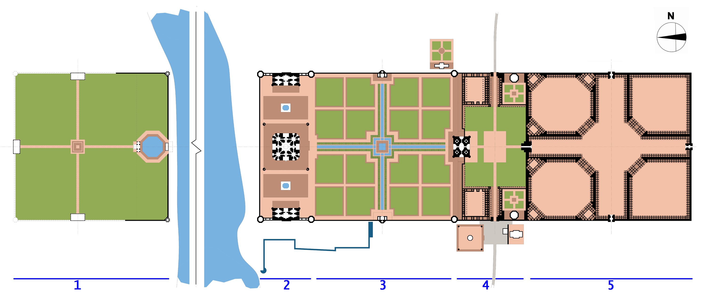

Building: Badshahi Mosque
Name: Stefano
Surname: Cursi
University ID: 429200
Documentation:
- plasm.net
- Computational Graphics 2014
- Badshahi_Mosque Wikipedia page
Link to project:
- exercise1.py
- exercise2.py
- exercise3.py
Images:

 



Description:
Per realizzare questo prototipo di moschea è stato realizzato inizialmente uno studio della planimetria effettuato sulle pagine menzionate, sono state calcolate le misure al meglio dei dati trovati in rete. Poi si è passati alla progettazione su carta dei passi che mi avrebbero portato alla realizzazione del prototipo, quindi indicando fasi, e tempi(fortunamente rispettati). Poi si è passati alla ricerca di colori più idonei alla realizzazione e poi finalmente all'inizio del Hmw




Description:
Per realizzare questo prototipo di moschea è stato realizzato inizialmente uno studio della planimetria effettuato sulle pagine menzionate, sono state calcolate le misure al meglio dei dati trovati in rete. Poi si è passati alla progettazione su carta dei passi che mi avrebbero portato alla realizzazione del prototipo, quindi indicando fasi, e tempi(fortunamente rispettati). Poi si è passati alla ricerca di colori più idonei alla realizzazione e poi finalmente all'inizio del Hmw